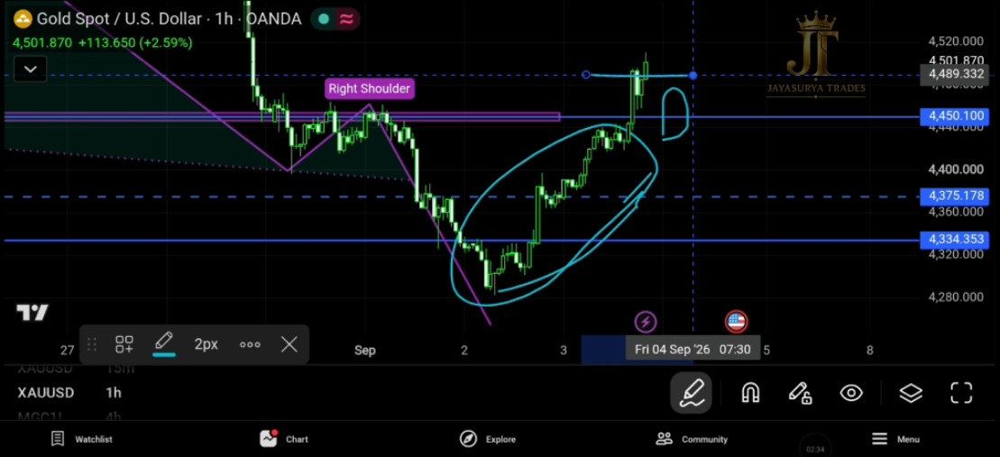
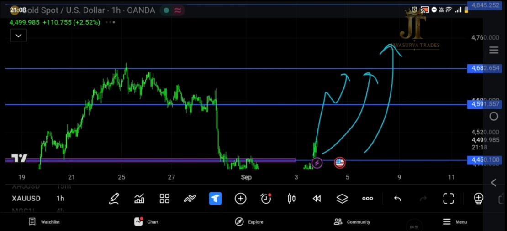
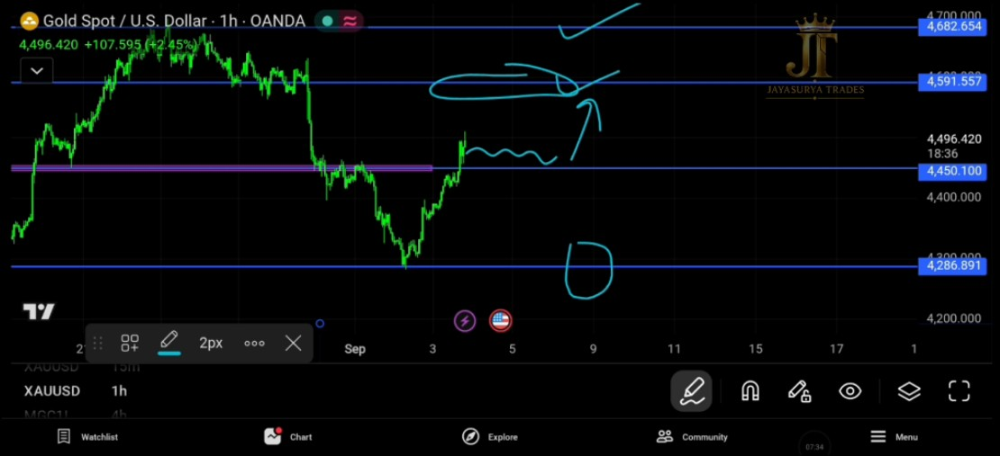

In yesterday's analysis, I explained that after the Head and Shoulders pattern broke downward, Gold had already made a significant bearish move. However, the overall market had not yet provided a confirmed buy trend.
Because of that, my approach was to wait for confirmation. Until the market showed a valid bullish confirmation, I was looking for potential sell-side opportunities with a good risk-to-reward ratio and avoiding unwanted buy entries.
Today, Gold moved upward and, importantly, the market has now closed a candle above 4450.100. This is the bullish confirmation level I was waiting for, and it changes the way I am approaching the market for the next trading day.
Watch Today's XAUUSD Analysis

What Happened After Yesterday's Analysis?
Yesterday, I explained that the Head and Shoulders breakdown had already produced a significant downward move. From a market-structure perspective, however, I did not consider the market to have provided a confirmed buy trend at that time.
That is why I said to wait for confirmation and focus on sell-side opportunities rather than forcing buy entries. The objective was to remain aligned with what the market was actually showing instead of entering trades simply because price had already moved significantly.
Today, Gold moved upward and did not provide the sell-side entry confirmation I was waiting for. While that meant there was no sell opportunity with the expected risk-to-reward setup, avoiding an unwanted trade is also important information.
Now the market has closed above 4450.100, providing the bullish confirmation I was waiting for.

The Market Has Now Given Bullish Confirmation
The key development today is the confirmed candle close above 4450.100. This was the level I previously identified as the condition required before I would consider moving my focus from the sell side toward the buy side.
Now that the market has closed above this level, the structure is signaling the start of a possible buy trend in this range. My approach is therefore turning toward the buy side as long as the market continues to confirm the bullish structure.
This does not mean every upward movement should automatically be treated as a buy opportunity. The focus remains on waiting for the market to continue confirming the direction rather than forcing entries.
Bullish Confirmation Level
The most important confirmation level for the current structure is:
The market has now closed a candle above 4450.100. Because this was the condition I was waiting for before considering buy-side opportunities, the current market structure is now being approached from the buy side.
The market is now signaling a possible shift toward the buy side.

Bullish Scenario
With the market now confirmed above 4450.100, the bullish side is the scenario I am watching for the coming days.
If Gold continues to remain bullish and the market structure continues to confirm the buy side, the first immediate minor resistance I am watching is:
If bullish continuation develops, 4682.654 is the immediate minor resistance I am watching. The next resistance level I am watching is 4592.046.
Above these levels, the next resistance area I am watching is:
These are levels I am watching as potential areas of reaction if the bullish structure continues. They should not be treated as guaranteed targets.
What Would Change the Trend Back to Sell Side?
Although the current structure is confirming the buy side, I am not ignoring the possibility that the market could change direction again. The level I am watching for a return toward the sell side is a candle close below 4283.704.
If the market closes a candle below 4283.704, that would invalidate the current buy-side view and bring the sell side back into focus from my market-structure perspective.
Candle close below 4283.704 → sell side can come back into focus.
How I Am Approaching Gold Tomorrow
For September 4, 2026, my focus has changed because the market has now provided the bullish confirmation I was waiting for.
- The Head and Shoulders pattern previously broke downward and produced a significant bearish move.
- Yesterday, I was waiting for confirmation instead of forcing buy entries.
- Today, Gold moved upward without providing the sell-side entry confirmation I was waiting for.
- Avoiding an unwanted trade is important because we take trades only when they align with the market's overall movement and confirmation.
- The market has now closed a candle above 4450.100.
- This confirmation means the current structure is signaling a possible shift toward the buy side.
- As long as the market continues to confirm the bullish structure, I am watching the buy side for opportunities.
- 4682.654 is the immediate minor resistance I am watching.
- 4592.046 is another resistance level I am watching.
- 4845.252 is the next resistance level I am watching above these areas.
- A candle close below 4283.704 would bring the sell side back into focus.
The objective is not to predict every movement. It is to stay aligned with the market structure and change direction only when the market provides the required confirmation.
Avoid unwanted trades.
Respect the market direction.
Wait for confirmation.
Let the market prove the change.
Key Takeaways
- The previous Head and Shoulders breakdown produced a significant bearish move.
- Yesterday, the market had not yet confirmed a buy trend, so the focus remained on waiting for sell-side opportunities.
- Today, Gold moved upward without providing the sell-side entry confirmation.
- Avoiding an unwanted trade helped maintain alignment with the market instead of forcing an entry.
- The market has now closed a candle above 4450.100.
- 4450.100 is therefore the confirmed level supporting the current buy-side view.
- 4682.654 is the immediate minor resistance I am watching.
- 4592.046 is another resistance level I am watching.
- 4845.252 is the next resistance level I am watching.
- A candle close below 4283.704 would bring the sell side back into focus.
- The current approach is to remain on the buy side as long as the market continues to confirm the bullish structure.
Avoid unwanted trades.
Respect the market direction.
Wait for confirmation.
Let the market prove the change.
Risk Disclaimer
This analysis is provided for educational and informational purposes only and should not be considered financial advice or a recommendation to buy or sell any financial instrument. Trading involves substantial risk. Always conduct your own research and follow your own trading plan and risk-management rules.